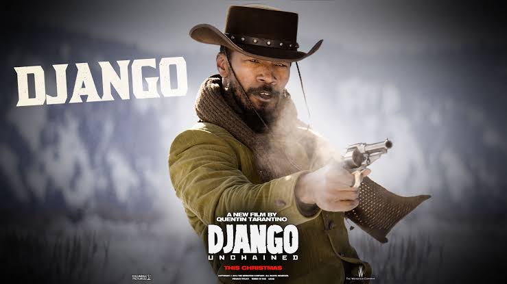
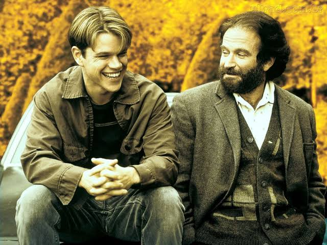
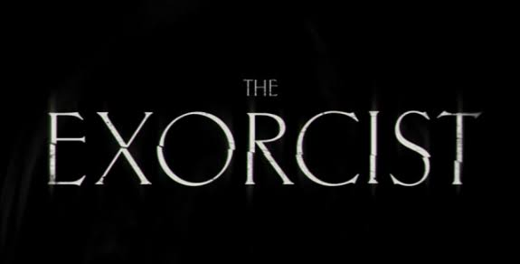
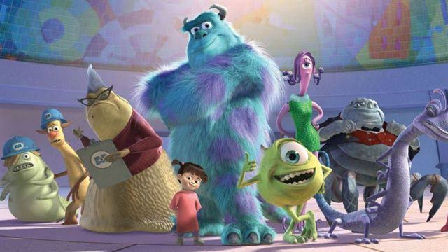
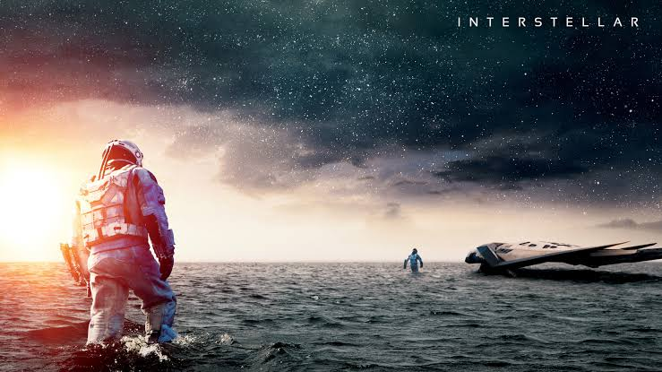

|  |
Django Livreo sul dos Estados Unidos, anos antes da Guerra Civil, um ex-escravo Django faz uma aliança inesperada com o caçador de recompensas Schultz para caçar os criminosos mais procurados do país e resgatar sua esposa de um fazendeiro que força seus escravos a participarem de competições mortais. |
|  |
Gênio IndomávelWill é um rapaz brilhante e tem um grande talento para a matemática, mas trabalha como faxineiro em uma famosa universidade. O psicólogo Sean Maguire o ajuda a formar sua identidade e lidar com as emoções, direcionando-o na vida. |
|  |
O ExorcistaUma atriz vai gradativamente tomando consciência de que a sua filha de doze anos está tendo um comportamento completamente assustador. Deste modo, ela pede ajuda a um padre, que também é um psiquiatra, e este chega a conclusão de que a garota está possuída pelo demônio. Ele solicita então a ajuda de um segundo sacerdote, especialista em exorcismo, para tentar livrar a menina desta terrível possessão. |
|  |
Monstros S.A.A maior fábrica de monstros do mundo conta com James Sullivan, um dos monstros mais assustadores, que tem o pelo azul e chifres, além de seu assistente e melhor amigo Mike, um monstro verde de um olho só. Eles têm por missão assustar as crianças, que são consideradas tóxicas pelos monstros e cujo contato com eles seria catastrófico para seu mundo. Porém, ao visitar o mundo dos humanos a trabalho, Mike e Sully conhecem a garota Boo, que acaba sem querer indo parar no mundo dos monstros. |
|  |
InterestelarAs reservas naturais da Terra estão chegando ao fim e um grupo de astronautas recebe a missão de verificar possíveis planetas para receberem a população mundial, possibilitando a continuação da espécie. Cooper é chamado para liderar o grupo e aceita a missão sabendo que pode nunca mais ver os filhos. Ao lado de Brand, Jenkins e Doyle, ele seguirá em busca de um novo la |